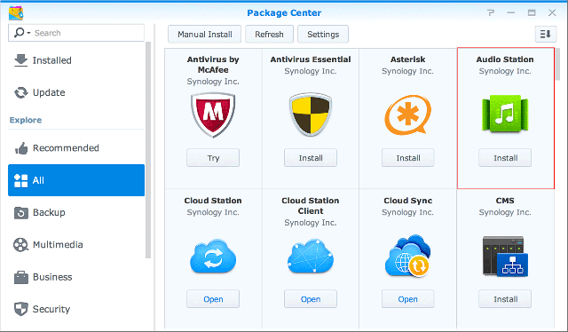
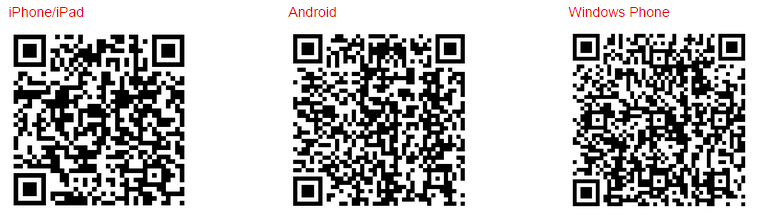

Oversigt
Med Audio Station kan du organisere, gennemse og afspille musik, der er gemt på din Synology NAS over internettet. Audio Station understøtter også et stort udvalg af filtyper, så du kan få glæde af musikken i et hvilket som helst format, som du kan lide. Du kan også downloade DS audio, et mobilprogram, der supplerer Audio Station, så du får adgang til musik på din Synology NAS, når du er på farten.
1. Installer Audio Station
- Gå til Pakkecenter, og søg efter Audio Station. Klik på Installer. 
2. Gem lydfiler til mappen music
- Gå til File Station > music, og klik på Upload.
- Vælg de filer, du vil uploade til mappen music fra den lokale computer.

3. Gennemse musik
Når du har uploadet musikfiler, kan du afspille og gennemse din musik på Audio Station. Hvis du vil kunne få adgang til og gennemse dine musikfiler, når du ikke er på dit lokale netværk, anbefales det, at du aktiverer QuickConnect under Kontrolpanel > QuickConnect. Hvis du ikke har en Synology-konto, kan du definere en på et par minutter, og så give din DiskStation en QuickConnect ID. Når denne mulighed er aktiveret kan du logge ind på DSM og altid få adgang til din musik. Du kan også bruge din QuickConnect ID til at logge ind på DS audio for at spare dig for problemer med at huske din IP-adresse.
3.1 Bibliotek
Biblioteket indeholder musik i den delte music-mappe eller andre indekserede mapper på Synology NAS. På fanen Bibliotek sorteres din musik i kategorier, så du får forskellige muligheder til nemt at gennemse musikken efter dine behov og præferencer. Derudover kan du også nemt finde en sang, som du leder efter. Du kan klikke ind i hver kategori for at søge eller vælge den kategori, som du vil søge i fra rullemenuen i søgelinjen.

3.2 Visningstilstande
Ikonerne øverst til højre på Audio Station sætter dig i stand til at skifte mellem forskellige visningstilstande, hvor du kan gennemse dit musikbibliotek.
- Listevisning sætter dig i stand til at se din musik som en liste, der viser navnet på sangen, kunstneren, albummet, varighed, nummer og klassifikation.
- Kunst viser nummerets navn, albumnavn og kunst på albummet.
- Afspilningskø viser afspilningskøen på hele skærmen med omslag og sangtitler eller tekster.


4. Offentlig deling
Audio Stations offentlige delingsfunktion sætter dig i stand til at dele sange med offentligheden ved at give dig et link, som du kan sende til folk, som enten ikke er på dit netværk eller ikke har en Synology NAS. Når du har det link, kan de lytte til sangen.
4.1 Deling af sange med offentligheden
- Højreklik på de(n) sang>(e>), som du vil dele, og vælg Del med offentligheden.
- Der er to muligheder, når du deler sange med offentligheden:
- Hvis du vælger en sang, som du vil dele, skal du i den dialogboks, der vises, markerer feltet ved siden af Del med offentligheden for at aktivere delelinket.
- Hvis du vælger flere sange til deling, oprettes en afspilningsliste. Du kan navngive din afspilningsliste samt have muligheden for at angive en gyldighedsperiode for linket ved at markere feltet ved siden af Tilpas gyldighedsperiode og klikke på OK.


- Kopier linket, og indsæt det til den person, som du vil dele afspilningslisten med, eller klik på Gå til link for at se linket direkte.

5. Organiser og afspil musik på mobileenheder
DS audio kører på iPad-/iPhone-/iPod touch-, Android-enheder og Windows Phones. Programmet findes gratis på Apple App Store, Google Play og Windows Phone Store. Du kan også scanne QR-koden nedenfor for at downloade det med det samme.
